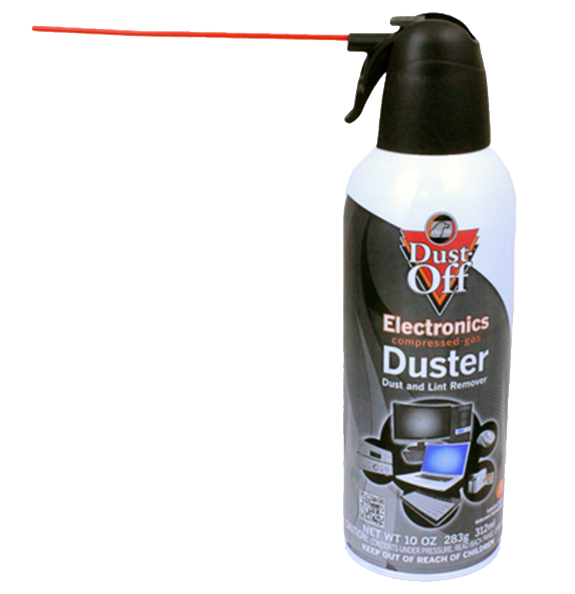

INSTANDHALTUNG
Je mehr Sie Ihren PC lieben, desto länger wird er leben

Reinigen Sie damit nur Ihre PC-Kernteile, um Spannungsspitzen zu vermeiden.
Es kann auch schwer zugängliche Stellen reinigen
Atme es nicht ein. Eine Maske tragen.
Tragen Sie eine Brille für den Staub
Halten Sie es beim Sprühen aufrecht.
Bei Gebrauch wird es kalt.
Jede Marke wird es tun, aber nur von einem guten Ruf kaufen
Außen oder anderswo abstauben, damit der Schmutz nicht zurückkommt.

Hält Ihren PC kühl, insbesondere bei intensiven Spielaktivitäten mit Grafikkarten
Bei 70 ° C sei wachsam,
Bei 80 ° C vorsichtig sein,
Bei 90 ° C sollten Sie Ihren PC ruhen lassen und Ihren Luftstrom verbessern
NICHT ÜBERSCHREITEN 100 ° C.
Die CPU wird normalerweise mit einem freien Lüfter (rechter Lüfter) geliefert.
Besser, wenn der Auspuff in der Nähe Ihrer Grafikkarte ist.
Ein Ventilator ist besser als flüssig, weil er einfach nicht gefährlich ist.
Drehen Sie die Klingen beim Reinigen nicht lieber, da sie sonst zerbrechen.
Verwenden Sie eine Druckluftdose für schwer zugängliche Teile.
Ihr gewählter Fall bestimmt, wie viele Lüfter Sie installieren können
Wählen Sie zu guter Letzt einen kühlen und sauberen Ort, an dem Sie Ihren PC einrichten können.
Wählen Sie einen kühlen und sauberen Ort, um Ihren PC einzurichten.
Vermeiden Sie direktes Sonnenlicht, da dies Ihren PC zerstört und überhitzt.